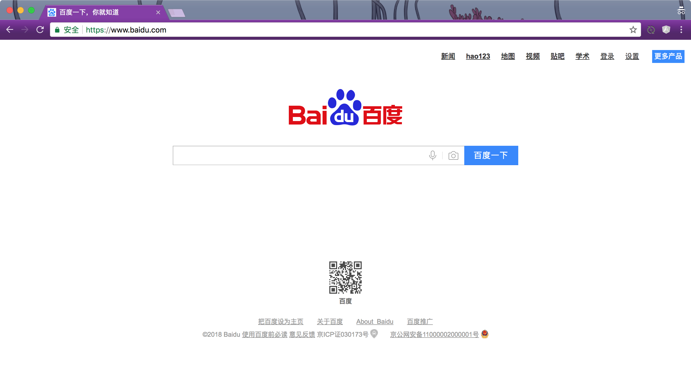
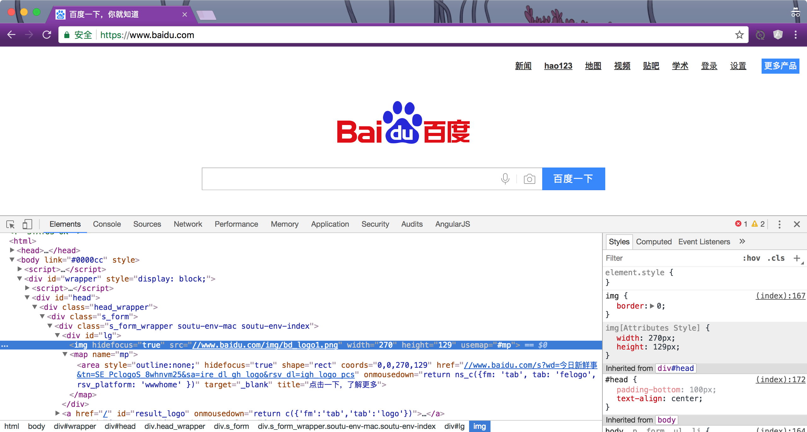
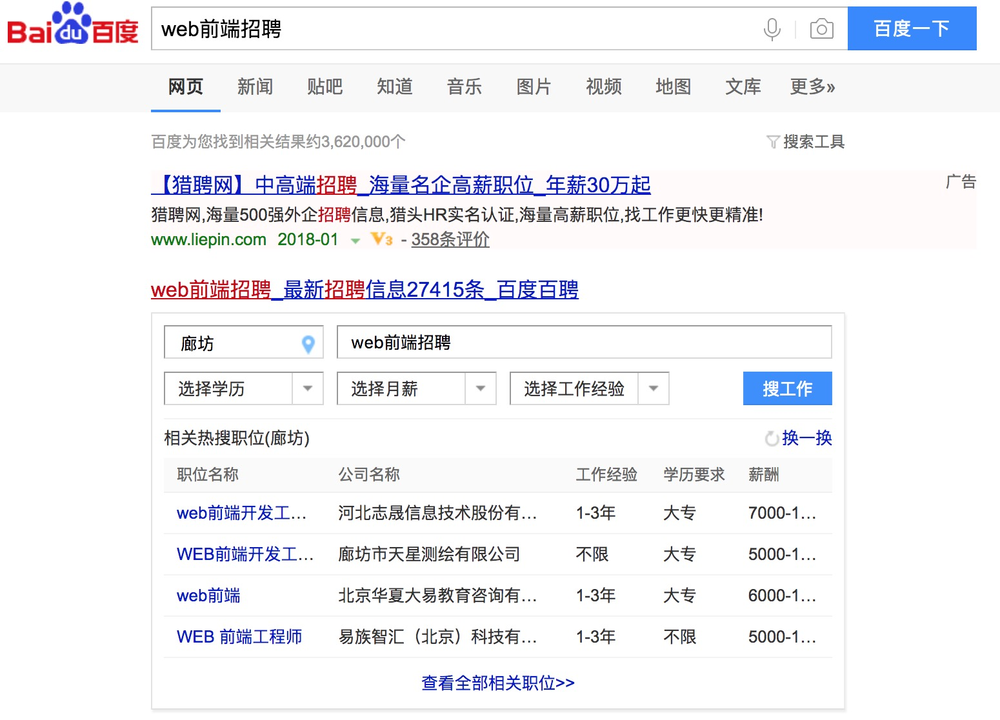
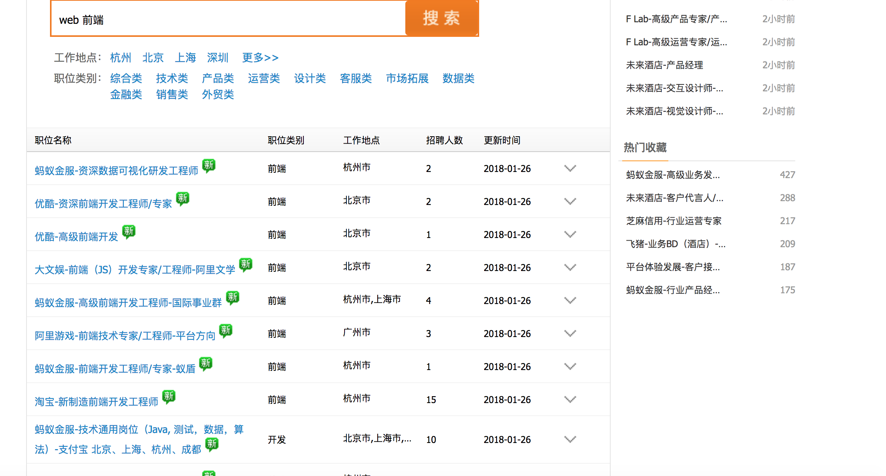
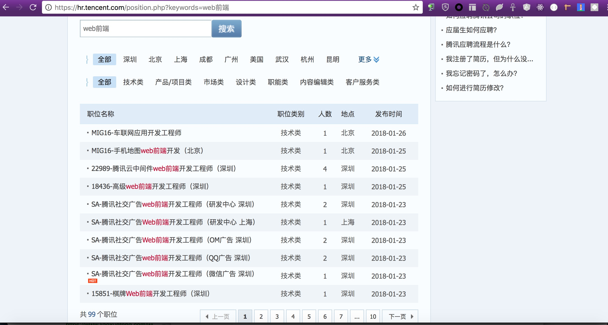
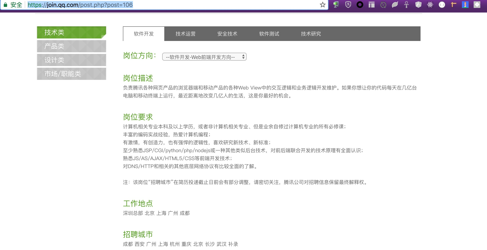
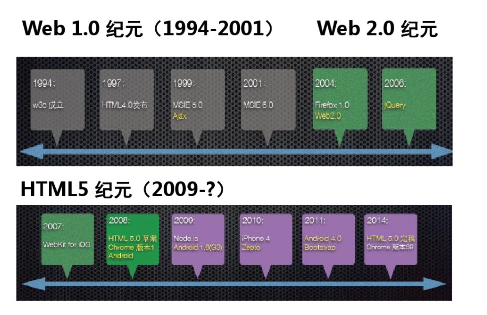
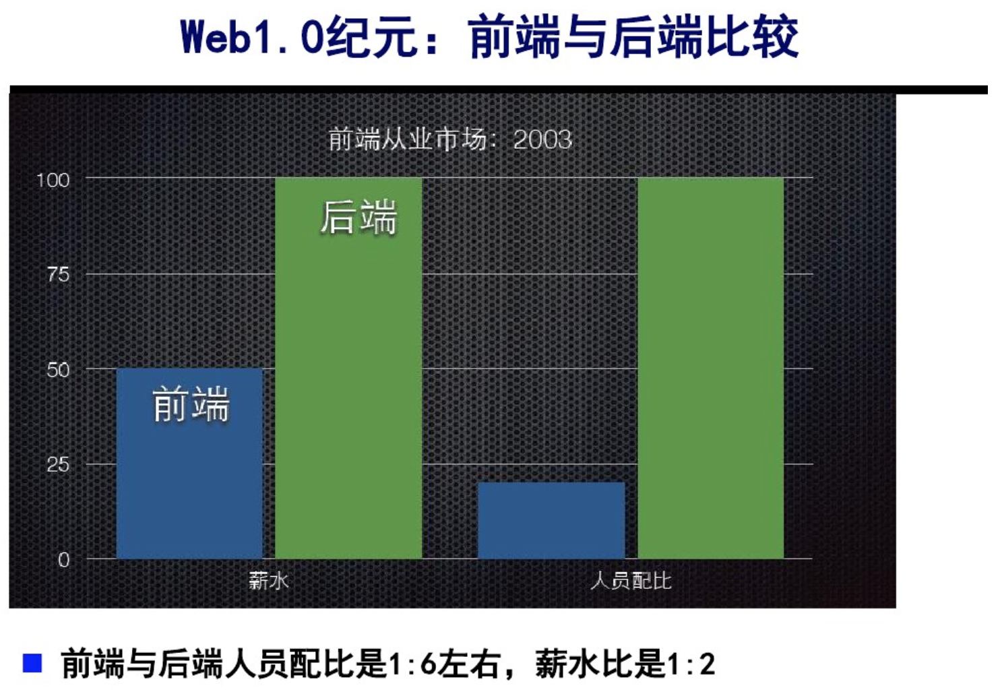
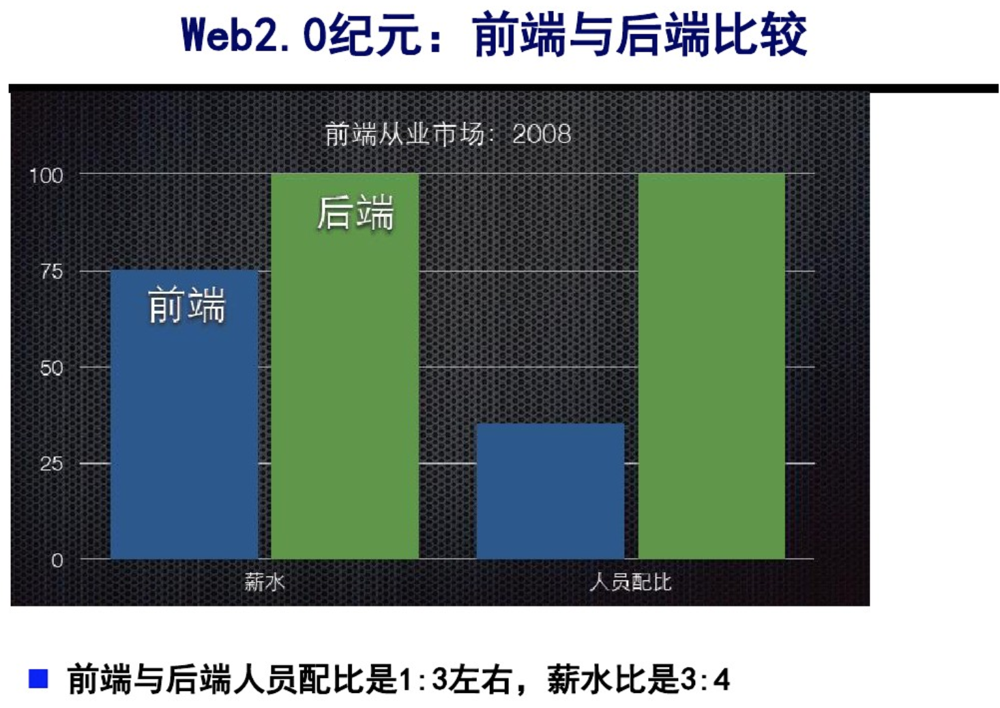
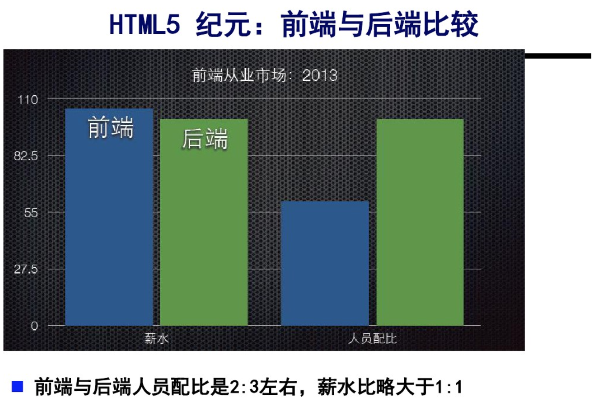

----耿朋


Web前端开发工程师，主要职责是利用(X)HTML/CSS/JavaScript/Flash等各种Web技术进行客户端产品的开发。




负责www 技术技术标准化的协议的制定。
1989年CERN中由Tim Berners-Lee领导的小组提交了一个针对Internet的新协议和一个使用该协议的文档系统，该小组将这个新系统命名为Word Wide Web，它的目的在于使全球的科学家能够利用Internet交流自己的工作文档。

网页制作、三剑客、特效300例
网页设计师、网页编辑
HTML、CSS、Dreamweaver、Fireworks、Flash
门户网站、企业网站、个人网站

JavaScript、Ajax、Div+Css、Web标准
前端开发工程师
HTML、CSS、JavaScript
互联网公司、IT软件公司

JavaScript、Ajax、Web标准、HTML5、CSS3、移动Web
前端开发工程师、H5工程师、全栈工程师
HTML、CSS、JavaScript、服务端脚本
互联网公司、IT软件公司、电商、金融、智能硬件、可视化
